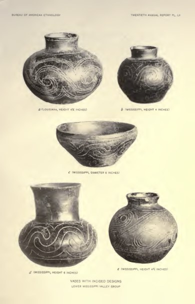

Aboriginal Chipped Stone Implements of New York — open at Google Drive
Historical referenceRead PDF
A collection for the curious
Books, field reports, and practical guides for looking closer at the artifacts and histories we explore at Barn Burner Relics.
Open to anyone with the link · View & download

THE READING ROOM
Follow a subject, look up a title,
or see where the pages take you.
The collection includes 42 Drive references and 30 public-source discoveries. Each title opens in Drive or its original archive. Download EPUBs to read in your preferred ebook app.
A large illustrated historical survey of point, spearhead and knife forms, useful for tracing older names and comparing manufacturing approaches.
A substantial 2020 report on a Tennessee Paleoindian site, useful for fluted-point and lithic-assemblage comparisons with documented archaeological context.
A focused Lower Illinois Valley point study that connects morphology with hunting patterns and explicitly examines information preserved in amateur collections.
An illustrated type reference covering both projectile points and pottery, including Caddo-region ceramic types. Useful for terminology and side-by-side form comparisons.
Expands the collection beyond flint: bone and antler awls, needles, harpoons, fishhooks, beads, pendants and arrowheads are covered.
Reference illustrations and discussion for metal implements in New York collections, useful when comparing copper and contact-era tool forms.
Adds the polished-stone side of Beauchamp's New York series, complementing the chipped-stone volume already owned. Useful comparative shapes and older terminology.
Illustrated reference for axes, celts, gouges, scrapers and other stone tools and ornaments, drawing on the Bureau of Ethnology collection.
A modern study of Lower Mississippi effigy pipes, useful for comparing iconography, style and function with the nineteenth-century pipe literature.
A 2021 study of Illinois platform-pipe production, raw materials, repair and regional variation. A valuable modern counterpart to McGuire.
Adds metal ornament forms and comparative illustrations to the library's shell and stone ornament coverage.
Illustrates and describes 27 Illinois stone images, including figurines, effigy pipes, tablets and heads. Particularly close to BBR's ceremonial-object interests.
A substantial illustrated survey of pipe forms and smoking customs, with US National Museum examples. A strong base reference for BBR pipe research.
A compact, artifact-specific monograph with 53 illustrations. Especially useful for comparing birdstone profiles, perforations and historical terminology.
A short Smithsonian study focused specifically on Adena effigy pipes and the Welcome Mound.
A detailed pottery analysis from the Powell Tract, with a dedicated pottery-description appendix and ceramic chronology.
Early excavation descriptions and illustrated assemblages from Arkansas and Mississippi add Lower Mississippi pottery and artifact comparisons.
A regional illustrated ceramic reference useful for comparing New York vessel forms and decoration with Midwest material.
Focused study of Ramey Incised decoration from the American Bottom, including design units, symmetry and rim profiles. Useful for explaining patterns on Cahokia-area pottery.
Useful for shell beads, wampum and other shell objects, supplying a northeastern comparison to Holmes' broader Art in Shell already in the library.
A collection of Cahokia research papers that adds twentieth-century archaeological work to the library's early Cahokia histories.
Illinois Hopewell and Woodland site studies provide assemblage and cultural context for regional tools, ceramics and ceremonial objects.
Includes Utica Hopewell, Frederick, Henderson Creek and Hannah site studies, extending the library's Illinois Woodland coverage.
Detailed Tract 15A and Dunham Tract excavations strengthen the contextual side of Cahokia research beyond older mound descriptions.
Maps, mound-by-mound descriptions, research history and bibliography provide context for Cahokia-related objects and video scripts.
A substantial Late Archaic Tennessee site report covering an assemblage and its archaeological context; useful for tools, ornaments and comparative research.
A Middle Woodland ceremonial-center report with lithic and ceramic descriptions, illustrations and comparative discussion.
A museum monograph on a Georgia mound assemblage, useful for Southeastern ceramic and artifact comparisons.
A detailed Central Wabash Valley assemblage study, providing regional context for Archaic tools and associated material.
An Ohio Hopewell site monograph with 27 plates and 47 illustrations; useful for relating stone tools, pottery and other objects to a documented assemblage.
Try a different title, author, or subject.
KEEP EXPLORING
Find the original Drive collection and the guide to our latest discoveries.